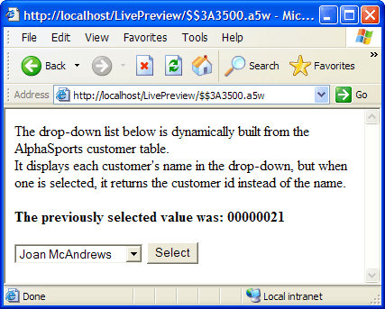

Returning a Different Field Than You Display
Frequently in a database application you will want to display one field value while storing a different field value. For example, you might want to display "Alaska" but store "AK". You might want to display a user's full name, but store his or her employee number. The following two examples show how to use this technique with a drop down list of choices
Using a WHILE ... END WHILE Loop
Create a new A5W page with the following content.
|
<html> <body> The drop-down list below is dynamically built from the AlphaSports customer table.<br> It displays each customer's name in the drop-down, but when one is selected, it returns the customer id instead of the name.<br> <br> <%A5 if eval_valid("cCmd") then if cCmd = "Select" then ? "<B>The previously selected value was: " + cSelectBox + "</B><BR>" end if end if %> <form ACTION=" <%A5 ? Request.Script_Name %> " METHOD="post"> <SELECT NAME="cSelectBox"> <%A5 pTbl = table.open("customer.dbf") pTbl.fetch_first() while .not. pTbl.fetch_eof() %> <OPTION VALUE=" <%A5 ? pTbl.customer_id %> "> <%A5 ? pTbl.firstname + " " + pTbl.lastname %> </OPTION> <%A5 pTbl.fetch_next() end while %> </SELECT> <input TYPE="submit" NAME="cCmd" VALUE="Select"> </form> </body> </html> |
Things to note in this page include:
pTbl is a pointer variable. It is DIMmed implicitly by the pTbl = table.open("customer.dbf") statement. This means that Alpha Five knows out that pTbl is a Pointer variable because the table.open() function creates a pointer variable.
cCmd is a character variable created by the <input TYPE="submit" NAME="cCmd" VALUE="Select"> statement. This mean that cCmd does not exist until the page has been run at least once. The eval_valid("cCmd") expression tests to see if cCmd exists before displaying the selected customer_id value.
The form ACTION=" <%A5 ? Request.Script_Name %> " expression causes the page to be reloaded after you select an entry from the list box and store it in the cSelectBox variable.
The pTbl.fetch eof() method returns .T. (TRUE) when you have read the last record in a table. Consequently, the expression .not. pTbl.fetch eof() returns .F. (FALSE) and ends the WHILE ... END WHILE loop after you read the last record.
The VALUE=" <%A5 ? pTbl.customer_id %> " statement sets the value that the list box returns when you select one of its entries.
The <%A5 ? pTbl.firstname + " " + pTbl.lastname %> expression between the <OPTION ...> and </OPTION> tags specifies the data to display in the list box. This is different than the data that is saved.
Select File > Save As and name the page "Save_Different_Value_1".
Click to run the page in Live Preview.

Using TABLE.EXTERNAL_RECORD_CONTENT_GET()
Create a new A5W page with the following content.
|
<html> <title>Save_Different_Value_2</title> <body> Below is a drop-down list similar to above, but it is built using the TABLE.EXTERNAL_RECORD_CONTENT_GET() function.<br> This method should run faster than a WHILE ... END WHILE loop.<br> <br> <%A5 if eval_valid("cCmd2") then if cCmd2 = "Select" then ? "<B>The previously selected value was: " + cSelectBox + "</B><BR>" end if end if %> <form ACTION=" <%A5 ? Request.Script_Name %> " METHOD="post"> <SELECT NAME="cSelectBox"> <%A5 cOptions = table.external_record_content_get("customer.dbf", "'<OPTION VALUE=' + customer_id + '>' + firstname + ' ' + lastname", "lastname","") ? cOptions %> </SELECT> <input TYPE="submit" NAME="cCmd2" VALUE="Select"> </form> </body> |